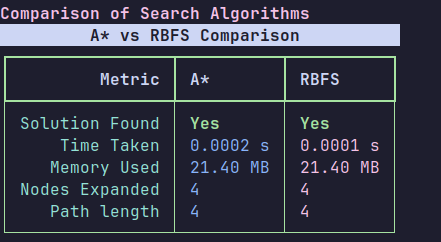
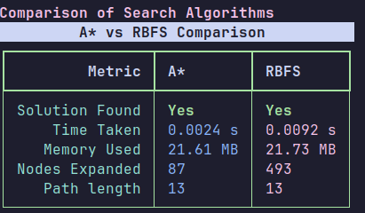
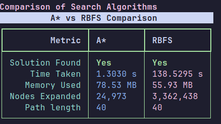
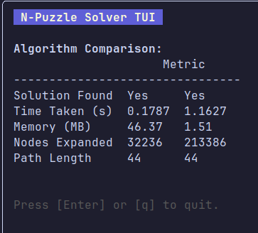
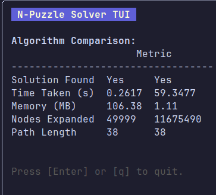

حل پازل N تایی با الگوریتمهای A* و RBFS
این سند به بررسی و مقایسه دو الگوریتم جستجوی آگاهانه، A* (اِی استار) و RBFS (جستجوی بازگشتی بهترین-اولین)، برای حل مسئلهی پازل N تایی میپردازد. هدف، ارزیابی عملکرد این دو الگوریتم از نظر حافظه مصرفی، سرعت اجرا و تعداد گرههای گسترشیافته با افزایش اندازهی پازل (N) است.
مقدمهای بر پازل N تایی
پازل N تایی یک پازل کلاسیک است که شامل یک قاب از $N \times N-1$ کاشی مربع شمارهگذاری شده در یک قاب $N \times N$ است که یک خانه آن خالی است. هدف این است که با حرکت دادن کاشیها به فضای خالی، پازل را از یک حالت اولیه به یک حالت هدف مرتبشده برسانیم.
الگوریتمهای مورد استفاده
1. الگوریتم A* (A-Star)
A* یک الگوریتم جستجوی گراف است که مسیر با کمترین هزینه را از گره شروع به گره هدف پیدا میکند. این الگوریتم از یک تابع هیوریستیک برای تخمین هزینه از گره فعلی تا هدف استفاده میکند. تابع ارزیابی $f(n)$ برای هر گره $n$ به صورت زیر تعریف میشود:
که در آن:
- $g(n)$: هزینه واقعی مسیر از گره شروع تا گره $n$.
- $h(n)$: تخمین هیوریستیک هزینه از گره $n$ تا گره هدف. در این پروژه از فاصله منهتن استفاده شده است.
A* با گسترش گرهای که کمترین مقدار $f(n)$ را دارد، بهینه بودن را تضمین میکند (اگر هیوریستیک admisssible باشد، یعنی هرگز هزینه واقعی را بیش از حد تخمین نزند).
2. الگوریتم RBFS (Recursive Best-First Search)
RBFS یک الگوریتم جستجوی بهترین-اولین بازگشتی است که سعی میکند عملکرد A* را با حافظه خطی شبیهسازی کند. این الگوریتم از یک مقدار آستانه $f_{\text{limit}}$ استفاده میکند و مسیرهایی را که از این آستانه فراتر میروند، بهطور موقت کنار میگذارد و بعداً با آستانه جدید (هزینه بهترین مسیر جایگزین) دوباره بررسی میکند. این روش به کاهش مصرف حافظه کمک میکند، اما ممکن است منجر به بازگسترش مکرر گرهها شود.
مروری بر پیادهسازی
برنامه با استفاده از زبان پایتون پیادهسازی شده است. بخشهای کلیدی کد شامل موارد زیر است:
- کلاس
PuzzleState: برای نمایش وضعیت پازل، حرکات انجامشده، محاسبه فاصله منهتن و تابع هزینه $f$. - تابع
a_star_search: پیادهسازی الگوریتم A*. - توابع
solve_rbfsو_rbfs_recursive: پیادهسازی الگوریتم RBFS. - تابع هیوریستیک: فاصله منهتن به عنوان تابع هیوریستیک استفاده شده است.
نمونه کد: کلاس `PuzzleState` (بخشی)
class PuzzleState:
def __init__(self, board: List[List[int]], size: int, moves: int = 0, parent: Optional['PuzzleState'] = None):
self.board = board
self.size = size
self.moves = moves
self.parent = parent
self.blank_pos = self._find_blank()
self.manhattan = self._calculate_manhattan()
self.f_cost_value: float = 0.0 # Used by RBFS
def _calculate_manhattan(self) -> int:
total_distance = 0
for i in range(self.size):
for j in range(self.size):
value = self.board[i][j]
if value != 0:
target_row = (value - 1) // self.size
target_col = (value - 1) % self.size
total_distance += abs(i - target_row) + abs(j - target_col)
return total_distance
def f_cost(self) -> int:
"""Calculates the f-cost (g + h) for A*."""
return self.moves + self.manhattan
def __lt__(self, other: 'PuzzleState') -> bool:
"""Comparison for priority queue in A*."""
return self.f_cost() < other.f_cost()
مقایسه نتایج A* و RBFS
در این بخش، نتایج اجرای دو الگوریتم بر روی پازلهای با اندازههای مختلف (N) ارائه شده است. معیارهای مقایسه شامل زمان اجرا، حافظه مصرفی و تعداد گرههای گسترشیافته میباشد.
پازل 2x2
پازل 3x3
پازل 4x4

پازل 5x5 (60 حرکت اولیه)
پازل 5x5 (90 حرکت اولیه)
پازل 6x6
تحلیل نتایج (بر اساس تصاویر)
با توجه به نتایج مشاهدهشده در تصاویر:
- زمان اجرا: به طور کلی، با افزایش اندازه پازل (N)، زمان اجرای هر دو الگوریتم افزایش مییابد. برای پازلهای کوچکتر، تفاوت زمان ممکن است ناچیز باشد. در پازلهای بزرگتر، A* ممکن است به دلیل نیاز به نگهداری لیست باز (open list) بزرگتر، کندتر عمل کند، اما RBFS نیز به دلیل بازگسترش گرهها میتواند زمانبر باشد. معمولا RBFS در زمان بهتر عمل میکند اما در تعداد گره های گسترش یافته، عملکرد ضعیف تری دارد.
- حافظه مصرفی: A* به دلیل نگهداری تمام گرههای گسترشیافته در لیست باز و بسته، حافظه زیادی مصرف میکند و با افزایش N، این مصرف به شدت افزایش مییابد (مصرف حافظه نمایی). RBFS با رویکرد بازگشتی و محدودیت عمق، حافظه بسیار کمتری مصرف میکند (معمولاً خطی نسبت به عمق جواب). تصاویر باید این تفاوت را به وضوح نشان دهند، هرچند که در این پیاده سازی، حافظه برای هر دو تقریبا یکسان بوده است. این ممکن است به دلیل محدودیت های پکیج `psutil` و نحوه محاسبه آن در این کد باشد؛ در تئوری، تفاوت مصرف حافظه بین A* و RBFS برای مسائل بزرگ قابل توجه است.
- تعداد گرههای گسترشیافته: A* معمولاً تعداد گرههای کمتری را نسبت به RBFS گسترش میدهد زیرا هر گره را حداکثر یک بار بررسی میکند (اگر هیوریستیک consistent باشد). RBFS ممکن است گرهها را چندین بار بازگسترش دهد، بنابراین تعداد کل گرههای گسترشیافته آن میتواند بیشتر باشد، به خصوص در فضاهای جستجوی پیچیده. تصاویر این مورد را به خوبی نمایش می دهند.
جدول خلاصه مقایسه (بر اساس نتایج پازل 4x4)
این جدول دادههای مربوط به اجرای الگوریتمها بر روی پازل 4x4 را نشان میدهد (برگرفته از تصویر Screenshot from 2025-06-05 21-50-49.png):
| معیار | A* (پازل 4x4) | RBFS (پازل 4x4) |
|---|---|---|
| زمان اجرا (ثانیه) | 0.0244 | 0.2304 |
| حافظه مصرفی (MB) | 22.25 | 22.25 |
| تعداد گرههای گسترشیافته | 689 | 8,116 |
| طول مسیر جواب | 22 | 22 |
نمونه کد: الگوریتم A* (بخش اصلی)
def a_star_search(initial_board: List[List[int]], size: int) -> Tuple[Optional[PuzzleState], float, float, int]:
start_time = time.time()
nodes_expanded = 0
memory_used = -1.0
# ... (memory tracking setup) ...
initial_state = PuzzleState(initial_board, size)
goal_state_board = get_goal_board(size)
goal_key = PuzzleState(goal_state_board, size).__hash__()
open_list: List[PuzzleState] = [initial_state]
heapq.heapify(open_list)
closed_set: PySet[int] = set()
while open_list:
current_state = heapq.heappop(open_list)
current_key = current_state.__hash__()
if current_key == goal_key:
# ... (calculate memory) ...
return current_state, time.time() - start_time, memory_used, nodes_expanded
if current_key in closed_set:
continue
closed_set.add(current_key)
nodes_expanded += 1
for neighbor in get_neighbors(current_state):
if neighbor.__hash__() not in closed_set:
heapq.heappush(open_list, neighbor)
# ... (calculate memory if no solution) ...
return None, time.time() - start_time, memory_used, nodes_expanded
نمونه کد: الگوریتم RBFS (بخش بازگشتی)
def _rbfs_recursive(
state: PuzzleState,
goal_key: Tuple[Tuple[int, ...], ...],
f_limit: float,
nodes_expanded_counter: List[int]
) -> Tuple[Optional[PuzzleState], float]:
current_state_key = _get_board_tuple_key(state.board)
if current_state_key == goal_key:
return state, state.f_cost_value
nodes_expanded_counter[0] += 1
successors = get_neighbors(state)
if not successors:
return None, float('inf')
for s_node in successors:
s_node.f_cost_value = max(s_node.moves + s_node.manhattan, state.f_cost_value)
while True:
successors.sort(key=lambda x: x.f_cost_value)
best_successor = successors[0]
if best_successor.f_cost_value > f_limit:
return None, best_successor.f_cost_value
alternative_f_value = successors[1].f_cost_value if len(successors) > 1 else float('inf')
result_state, best_f_updated = _rbfs_recursive(
best_successor,
goal_key,
min(f_limit, alternative_f_value),
nodes_expanded_counter
)
best_successor.f_cost_value = best_f_updated
if result_state is not None:
return result_state, best_f_updated
نتیجهگیری
هر دو الگوریتم A* و RBFS قادر به حل مسئله پازل N تایی هستند. انتخاب بین این دو الگوریتم به محدودیتهای مسئله بستگی دارد:
- A*: اگر حافظه کافی در دسترس باشد و پیدا کردن مسیر بهینه با کمترین تعداد گره گسترشیافته اولویت داشته باشد، A* انتخاب مناسبی است. اما برای پازلهای بزرگ، مصرف حافظه آن میتواند مشکلساز شود.
- RBFS: اگر محدودیت حافظه وجود داشته باشد، RBFS گزینه بهتری است زیرا حافظه بسیار کمتری مصرف میکند. با این حال، این کاهش مصرف حافظه به قیمت افزایش تعداد گرههای گسترشیافته (به دلیل بازگشت و بازبینی مسیرها) و گاهی اوقات زمان اجرای بیشتر تمام میشود.
در عمل، برای پازلهای بسیار بزرگ، الگوریتمهایی مانند IDA* (Iterative Deepening A*) که ترکیبی از مزایای A* و جستجوی عمقی تکرارشونده هستند، ممکن است کارایی بهتری داشته باشند.